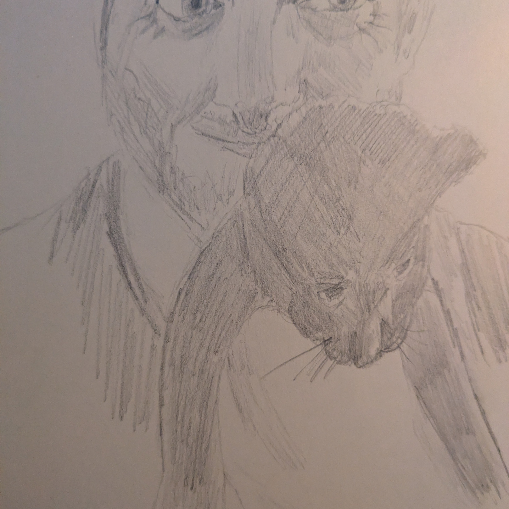

The Slump
It’s been a minute since I posted here. Sorry about that, been busy with a few things. Largely good things. But time consuming. I’ve now shuffled a few bits around and should be able to squeeze more writing and drawing in, so I’ll be further polluting the internet with my ramblings in short order. I’ve got a post almost ready to go, in fact.
In case anyone is wondering what I’ve been up to, it’s three good things and a couple less good. I started a fresh round of EMDR (weird trauma therapy), we got a kitten (see my Mastodon account for pictures), and we’re tentatively preparing to move again, perhaps for the last time. That’s the good. Unfortunately, my mother is severely unwell and my grandmother is showing signs of dementia.

The kitten is sick of me already.
So, yeah, a lot going on. I’ll leave it here for now, but I’ll be back soon.
Thanks for reading.
Toodles,
–Antony F.